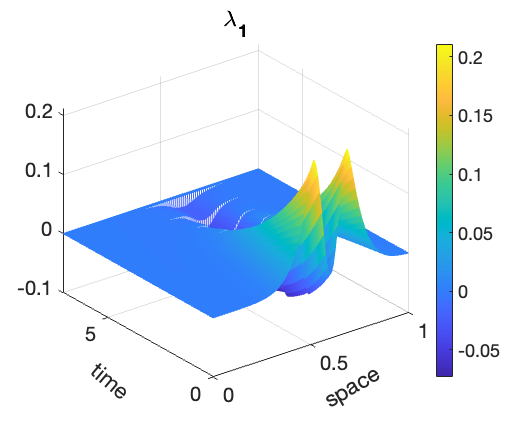

Bonjour, ici Flavien ALONZO
Ingénieur data scientist, docteur en mathématiques appliquées.
Diplomé ingénieur et docteur de l'Ecole Centrale de Nantes, je me passionne pour l'utilisation concrète des mathématiques sur des problèmes réalistes, principalement pour le secteur médical.
Historique Projets Articles EnseignementsHistorique
Qualification section cnu 26
Doctorat Mathématiques appliquées à la santé
Nantes - Laboratoire de Mathématiques Jean LerayDirecteur : Mazen Saad
Co-Encadrant : Aurelien Serandour
Ingénieur généraliste
Nantes - Ecole Centrale de NantesPrépa MPSI - MP
Tours - Lycée DescartesBaccalauréat Scientifique
La Souterraine - Lycée Raymond LœwyAttaché temporaire d'enseignement et de recherche (ATER)
Nantes Université
Laboratoire de Mathématiques Jean Leray
Charge d'enseignement : 192h
Doctorant en mathématiques appliquées à la biologie
Nantes - Ecole Centrale de Nantes
Laboratoire de Mathématiques Jean Leray
Charge enseignement : 64h par an
Stagiaire en recherche et développement
Zaragoza (Espagne) - Universidad de Zaragoza
Instituto Universitario de Investigacion en Ingenieria de Aragon
Encadrants : Elias Cuëto et Beatriz Moya
Stagiaire data scientist
Clermont-Ferrand - Institut PascalProjets de recherche
Estimation états-paramètres pour des modèles de réaction-diffusion.
Simulation du comportement du Glioblastome Multiforme à partir d'IRM d'un patient
Résolution de l'équation KdV
Gain de puissance d'une ferme éolienne selon l'incidence du vent

Adaptative sloshing simulation using model reduction and GENERIC structure
Méthodes de Machine Learning appliquées à des données de périnatalité
Articles
Disponible sur mon profil HALSimulation the behaviour of Glioblastoma Multiforme based on patient MRI during treatments
Journal of Mathematical BiologyAlonzo, F., Serandour, A.A. & Saad, M. Simulating the behaviour of glioblastoma multiforme based on patient MRI during treatments. J. Math. Biol. 84, 44 (2022). https://doi.org/10.1007/s00285-022-01747-x
Combining state and parameter estimation problems for reaction-diffusion models : Application to the Keller-Segel system and to the pattern formation system.
Soumis à Journal of Computational and Applied MathematicsPreprint disponible sur HAL
Enseignements
L1
Mathématiques avancées pour les sciences (CTDI)
Nantes Université (2022-2023)Nombres réels et inégalités
Nombres complexes
Rappels sur les fonctions
Fonctions circulaires et leurs réciproques
Intégration
Les équations différentielles linéaires d'ordre 1 et 2
L1
Calcul différentiel et intégral (TD)
Nantes Université (2022-2023)Fonctions d'une variable réelle
Fonctions multivaluées et multivariées
L2
Mathématiques pour l'informatique 1 (TD)
Nantes Université (2022-2023)Langage des ensembles
Polynôme d'interpolation
Fonctions continues
Fonctions dérivables
Formule de Taylor
Comparaison asymptotique
Quadratures
Notions de topologie
Fonctions à plusieurs variables
L2
Méthodes numériques (TP)
Nantes Université (2022-2023)Résolutions d'équations non linéaires
Interpolation polynômiale
Méthodes d'intégration numérique
L3
Probabilités numériques (TD)
Nantes Université (2022-2023)Probabilités discrètes
Probabilités continues
Convergences des lois
L3
Statistique (TD)
Nantes Université (2022-2023)Convergence des variables aléatoires
Estimation paramétrique
Intervalles de confiance et tests statistiques
L3
Analyse numérique 2 (TD)
Nantes Université (2022-2023)Schémas standards pour les EDO
Résolution d'équations non linéaires
Analyse numérique de schémas pour les EDO
L3
Mathématiques pour l'ingénieur (TD)
Centrale Nantes (2019-2022)Introduction à l'analyse numérique
Méthodes directes de résolution de systèmes linéaires
Méthodes itératives de résolution de systèmes linéaires et d'approximation de valeurs propres
Optimisation avec ou sans contraintes
Probabilités
Statistiques
Interpolation et approximation numérique
Intégration numérique
L3
Mathématiques pour l'ingénieur (TP)
Centrale Nantes (2019-2022)Initiation à Matlab
Equation de la chaleur 1D
Résolution d'un système linéaire tridiagonal par plusieurs méthodes (LU, Jacobi, Gauss-Seidel)
Optimisation avec ou sans contraintes
Loi usuelles
Convergence de suites de variables aléatoires
Evaluation d'une proportion
Moindres carrés avec contraintes linéaires
M1
Supervised Study Project in Mathematics
Nantes Université (2022-2023)Encadrement de deux projets pour des étudiants de M1 issus du parcours MACS (modélisation, analyse numérique, calcul scientifique).
M1-2
Projet Encadré
Centrale Nantes (2020-2022)Encadrement du projet annuel d'un groupe d'étudiants ingénieurs issus de l'option BioSTIC (sciences du numérique pour les sciences de la vie et de la santé) autour des tumeurs gliales.